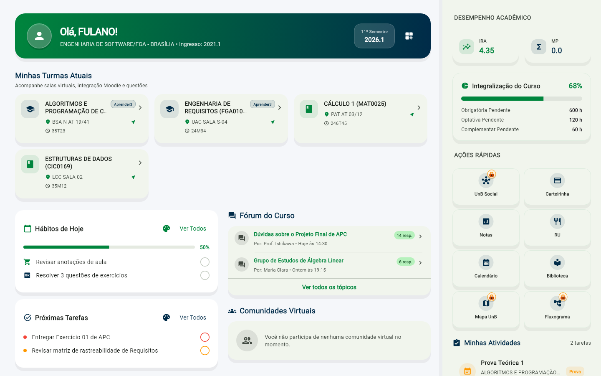

UnB - SIGAA -
Sistema Integrado de Gestao de Atividades Academicas
Semestre atual: 2026.1
JOAO DA SILVA
DEPTO CIENCIAS DA COMPUTACAO (11.01.01.15.01)
Portal Discente > Apresentacao Tecnica: O Desafio de Modernizar uma Pagina Legado
Atraves desta pagina voce pode consultar os modulos e relatorios tecnicos da apresentacao sobre os desafios de modernizacao e acessibilidade universal do SIGAA UnB.
Para visualizar o conteudo de um modulo, selecione-o na listagem abaixo. Para alternar entre os topicos, utilize o comando << Voltar ao Menu de Slides presente em cada tela de detalhe.
| Eixo Tematico: | |
| Item | Titulo do Modulo / Topico | Eixo Tematico | Descricao do Conteudo Tecnico | Acao |
|---|---|---|---|---|
| 01 | 1. Titulo e Abertura Retro | Identidade Institucional & Contexto | Ficha tecnica da sessao de engenharia, escopo do SIGAA Remix e sumario executivo. | |
| 02 | 2. O Ponto de Partida: O Ecossistema Legado | Arquitetura de Software Legada | Analise de Java EE, RichFaces, tabelas em cascata e ausencia de APIs publicas. | |
| 03 | 3. A Ilusao da Aparencia Bonita vs. Acessibilidade Real | Acessibilidade Universal (WCAG 2.2) | Por que estetica moderna superficial quebra criterios 1.4.4 (Resize Text) e 1.4.10 (Reflow). | |
| 04 | 4. Evidencias Visuais: Golden Tests de Acessibilidade 2x | Testes Visuais Automatizados | Inspecao interativa comparativa de 6 falhas criticas sob escala de fonte de 200%. | |
| 05 | 5. Tela Home: Responsividade Multi-Dispositivo | Design Responsivo & Adaptativo | Golden Tests da grade da Home nos perfis Desktop (1920x1080), Tablet e Mobile. | |
| 06 | 6. Tela Home: Interface Completa vs. Simplificada | Teoria da Carga Cognitiva | Comparativo de densidade de informacao com reducao de 64% dos nos no DOM. | |
| 07 | 7. Workflow de Desenvolvimento: GitHub Pages + WAVE | DevOps & Integracao Continua | Pipeline com sanitizacao estrita, empacotamento isolado e auditoria internacional WAVE. | |
| 08 | 8. O Paradoxo das Variantes (V1 Grafite vs. V3 AAA) | Trade-Offs de Design de Interfaces | Tensao entre expressividade urbana de rua (V1) e estetica austera de alto contraste (V3). | |
| 09 | 9. Conclusoes e Principios para Modernizacao Legada | Diretrizes de Engenharia de Software | 5 principios fundamentais para modernizacao segura e sustentavel de sistemas legados. | |
| 10 | 10. Sessao Encerrada por Inatividade | Encerramento & Recursos Finais | Tela institucional de conclusao de sessao com catalogo consolidado de links externos. | |
| Total de 10 modulos academicos disponiveis para consulta. | ||||
| Titulo do Modulo: | O Desafio de Modernizar uma Pagina Legado: O Caso SIGAA UnB |
|---|---|
| Eixo Tematico: | Identidade Institucional & Contexto |
| Objetivo Tecnico: | Apresentar o escopo do projeto SIGAA Remix, o sumario executivo e a ficha tecnica da analise de engenharia reversa. |
Sumario Executivo: Modernizar sistemas academicos legados vai muito alem de aplicar folhas de estilo com gradientes modernos ou fontes contemporaneas. Esta apresentacao documenta o processo de investigacao tecnica, destacando o comportamento do sistema sob condicoes extremas de acessibilidade (WCAG 2.2), o diagnostico de falhas visuais via Golden Tests automatizados e a construcao de alternativas que equilibram identidade visual e inclusao digital irrestrita.
| Titulo do Modulo: | O Ponto de Partida: O Ecossistema Legado |
|---|---|
| Eixo Tematico: | Arquitetura de Software Legada |
| Objetivo Tecnico: | Decompor a arquitetura original do SIGAA (Java EE, JSF, RichFaces, tabelas fixas) e mapear os sintomas criticos de obsolescencia. |
Contexto Tecnologico: O SIGAA original foi projetado na primeira decada dos anos 2000, periodo em que monitores CRT com resolucao 1024x768 eram o padrao de mercado e smartphones modernos ainda nao existiam no cotidiano universitario.
| Titulo do Modulo: | A Ilusao da Aparencia Bonita vs. Acessibilidade Real |
|---|---|
| Eixo Tematico: | Acessibilidade Universal (WCAG 2.2 / LBI) |
| Objetivo Tecnico: | Evidenciar por que reformas puramente esteticas falham em conformidade de acessibilidade e quebram sob text scaling de 200%. |
O Erro Classico de Engenharia e Design: Muitas tentativas de modernizacao concentram-se apenas em "deixar a tela bonita", aplicando cantos arredondados, paletas modernas e gradientes suaves, enquanto ignoram completamente as diretrizes internacionais da WCAG 2.2 e a Lei Brasileira de Inclusao (Lei 13.146/2015).
Fator Critico Revelado pelos Golden Tests: Ao aplicar escala de fonte de 2.0x (configuracao padrao de acessibilidade em sistemas operacionais para pessoas com baixa visao), interfaces visualmente polidas entram em colapso geometrico imediato. O teste visual automatizado e o unico instrumento capaz de prevenir essas regressoes.
| Titulo do Modulo: | Evidencias Visuais: Golden Tests de Acessibilidade 2x (Text Scaling) |
|---|---|
| Eixo Tematico: | Testes Visuais Automatizados |
| Origem dos Dados: | Suite oficial de Golden Tests em C:\dev\App_flutter_UnB\test\goldens\accessibility\. |
Inspecao Interativa de Falhas Reais: Utilize os seletores abaixo para consultar as evidencias visuais capturadas durante os testes de regressao visual do Flutter. Compare o comportamento do componente sob escala normal 1.0x contra a escala de acessibilidade 2.0x (que gera as tipicas faixas amarelas e pretas de RenderFlex overflow).
| Componente Avaliado: | |
| Modo de Exibicao Visual: |
| Titulo do Modulo: | Tela Home: Responsividade Multi-Dispositivo |
|---|---|
| Eixo Tematico: | Design Responsivo & Adaptativo |
| Objetivo Tecnico: | Demonstrar o comportamento elastico da tela principal nos perfis Desktop, Tablet e Mobile sem quebra de fluxo. |
Adaptabilidade de Layout: A tela Home do SIGAA modernizado foi concebida para operar de forma continua em multiplas resolucoes, superando a limitacao rigida de 980px do sistema legado. As capturas a seguir demonstram os Golden Tests nos tres principais perfis de visualizacao.
| Formato / Resolucao: |
|

Golden Test Oficial: Desktop (1920x1080) - Clique para ampliar
|
| Titulo do Modulo: | Tela Home: Interface Completa vs. Interface Simplificada |
|---|---|
| Eixo Tematico: | Teoria da Carga Cognitiva |
| Metrica Central: | Reducao de 64% na densidade de elementos no DOM para atenuar sobrecarga cognitiva discente. |
Engenharia de Usabilidade e Teoria da Carga Cognitiva: A interface completa do SIGAA contem dezenas de paineis simultaneos (perfil, noticias, bolsas, estagio, avaliacoes, comunidades virtuais). Para muitos estudantes, especialmente neurodivergentes ou em situacao de estresse de provas, essa sobrecarga visual retarda acoes basicas.
| Modo de Exibicao: | |
| Dispositivo de Teste: |
| Titulo do Modulo: | Workflow de Desenvolvimento: GitHub Pages + Auditoria WAVE |
|---|---|
| Eixo Tematico: | DevOps & Integracao Continua |
| Auditoria Oficial: | WebAIM WAVE API - Validacao Nivel AAA em producao continua. |
Pipeline de Validacao Continua e Publicacao Isolada: Para assegurar que o desenvolvimento ocorresse em ambiente realista sem expor credenciais institucionais, foi estabelecido um fluxo continuo de saneamento de dados, compilacao estatica e auditoria internacional.
| Titulo do Modulo: | O Paradoxo das Variantes (V1 Grafite vs. V3 WCAG AAA) |
|---|---|
| Eixo Tematico: | Trade-Offs de Design de Interfaces |
| Conflito Central: | Tensao entre expressao cultural autoral urbana (V1) e cumprimento estrito e austero das normas WCAG 2.2 AAA (V3). |
O Conflito de Engenharia e Design Universal: A experiencia de desenvolvimento revelou uma tensao real entre expressividade visual autoral e conformidade tecnica estrita de acessibilidade.
Conclusao do Paradoxo: O desenvolvimento do SIGAA Remix demonstrou que um bom software publico nao deve impor uma unica visao estetica. A arquitetura modular permite que coexistam a expressao cultural (V1) e a acessibilidade irrestrita (V3).
| Titulo do Modulo: | Conclusoes e Principios para Modernizacao Legada |
|---|---|
| Eixo Tematico: | Diretrizes de Engenharia de Software |
| Objetivo Tecnico: | Sintetizar as 5 diretrizes prioritarias para projetos futuros de modernizacao em sistemas governamentais e universitarios. |
Impacto do SIGAA Remix: Demonstrar que e possivel transformar um ambiente burocratico e hostil em uma plataforma acessivel, acolhedora e confiavel para toda a comunidade academica da Universidade de Brasilia.
| Titulo do Modulo: | SIGAA - Sessao Encerrada |
|---|---|
| Eixo Tematico: | Encerramento & Recursos Finais |
| Estado: | Apresentacao tecnica concluida com exito. |
Aviso de Sistema: O tempo maximo de sessao estipulado para esta demonstracao tecnica foi finalizado. Todos os 10 modulos de estudo de caso sobre o SIGAA UnB foram apresentados.
SIGAA | Superintendencia de Tecnologia da Informacao - STI - (61) 3107-0040 | Copyright © 2006-2026 - UFRN - sigaa-producao.unb.br - v4.15.10.58